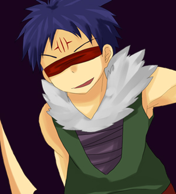

| プロフィール | |||
| 年齢： | 197歳 |  | |
| 種族： | 魔族 | ||
| 呼び名： | 剣の悪魔 | ||
| 身長： | 183cm | ||
| 体重： | 79kg | ||
| 好き： | 殺すこと | ||
| 嫌い： | すぐに死ぬ奴 | ||
| 大切： | 己自身 | ||
| 武器： | 刃召喚 | ||
| キャラ設定 | |||
| 魔族の中でも特に凶悪な最高位の魔人。 性格は残忍で、殺すことを至上の喜びとしている悪の権化。 人間相手が一番だが、暇なら同属でも平気で殺すため、魔族の中でも危険視されている。 普段は冷静で、あまり声を荒げるようなこともないが、戦闘中はどんどんテンションが上がり、別人のように興奮する。 そして戦闘が終わると一瞬にしてテンションが下がる。 とある剣士に両目を奪われ、視力を失っている。 魔族としての能力は「刃物召喚」 自己周囲に召喚フィールドを展開して、その空間内に自在に刃を召喚できる。 目は見えていないが、このフィールドを利用して内部の相手の動きを察知している。 召喚可能な刃物は過去に食った事のあるもの。 一度に召喚する刃が多いほど一本の強度が落ちる。 身体を刃に変化させて攻撃することもできる。 |
|||
| ゲーム中の性能 | |||
| 用途が判り易く、上手く機能させると非常に強力な類の攻撃を多く持つ攻撃型キャラ。 場所、状況を問わず高い火力が発揮でき、気づいたら相手を葬っている。 切り替えし能力が低かったり、遠距離戦が苦手だったりと、相手の土俵に持ち込まれるとつらくなることも多いため、相手の攻めの受け方も考えておかなければ封殺されることもある。 簡単なコンボでも高ダメージが出せるため、初心者にもそれなりにお勧め。 |
|||
| オリジナルアビリティ | |||
| スキル | |||
| 聖者の墓 | |||
| 死者の道 | |||
| 苦悶の刃 | |||
| 剣の舞 | |||
| 安息の棺 | |||
| フィニッシュスキル | |||
| 冥府の剣 | |||